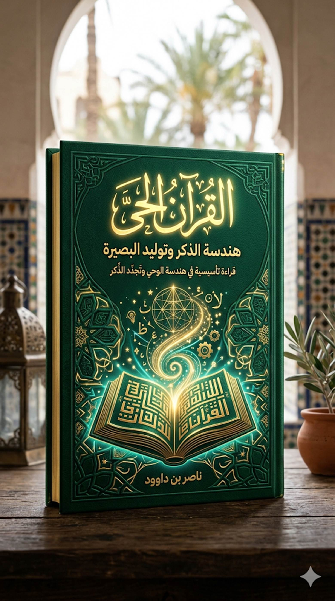

من أعظم المفارقات في التاريخ
الإسلامي المعاصر، أن الأمة التي استقبلت القرآن بوصفه "كتاباً
حيّاً"؛ يهدي، ويذكّر، ويوقظ، ويحيي، قد انتهى بها المطاف إلى وراثة
علاقة جامدة به. علاقة تختزل الوحي في محفوظات سردية، أو أحكام متفرقة، أو طقوس
تعبدية باردة، بينما تراجعت وظيفته الأصلية بوصفه قوة مولدة للوعي، وبصيرة
منشئة للعمران، وميزاناً ضابطاً للحياة.
لقد تحول القرآن في الوعي الجمعي من
"نور يُستضاء به لرؤية الوجود" إلى "نص يُراد فهم مفرداته
فقط". وهنا تكمن الأزمة؛ أزمة انقطاع الاتصال بـ "هندسة الوحي".
1. طبقات الأزمة: اختزال الكينونة
لا تعود هذه الأزمة إلى عامل واحد،
بل هي نتاج تظافر ثلاث طبقات من الاختزال:
2. مفهوم "الأمية الثانية"
إننا اليوم أمام ظاهرة أسميها "الأمية
الثانية". وهي أخطر من الأولى؛ فالأمية الأولى كانت جهلاً بالقراءة
والكتابة، أما الثانية فهي أن يقرأ المرء القرآن بلغة سليمة وأدوات لغوية وبيانية،
لكنه يقرؤه بعقلية غريبة عن هندسته الداخلية.
في هذه الأمية:
وهنا يقع الانفصال الوجودي؛ حيث يصبح
النص "ميكانيكياً" جامداً في وعي القارئ، رغم كونه في ذاته وحياً
متدفقاً.
3. السؤال المركزي: كيف يعمل القرآن؟
هذا الكتاب لا يأتي ليجيب على سؤال: "ماذا
يقول القرآن؟" (فهذا مسار التفسير التقليدي)، بل ليجيب على سؤال أعمق: "كيف
يعمل القرآن؟".
إننا ننتقل من "فقه
المعنى" إلى "فقه آلية توليد المعنى". القرآن ليس مجرد
"تطبيق" (Application) يؤدي وظيفة محددة داخل حياة الإنسان، بل هو "نظام
تشغيل" (Operating System) يعيد تعريف الحياة
نفسها.
4. أطروحة الكتاب ومنهجه
تقوم الأطروحة المركزية لهذا العمل
على أن القرآن "كينونة هادية" لا مجرد "مدونة نصوص".
ولإثبات ذلك، سنعمل على تفكيك هندسة الوحي عبر أربعة مستويات:
إن الأزمة ليست في صمت النص، بل في
انسداد النوافذ؛ وهذا الكتاب محاولة لفتح النافذة من جديد، لاستعادة فعالية القرآن
بوصفه وحياً يُمشى به في الناس.
من التعريف القاموسي إلى البناء
الشبكي للمعنى
تكمن كبرى معضلات التلقي المعاصر
للقرآن في "الذهنية القاموسية"؛ وهي
ذهنية تفترض أن لكل لفظة في القرآن مقابلاً تعريفياً ثابتاً ومغلقاً، تماماً كما
تعمل القواميس اللغوية. هذه الرؤية الميكانيكية تحول القرآن إلى "مخزن
معلومات" بدلاً من كونه "نظام تشغيل".
الحقيقة المعرفية التي يقدمها هذا
الفصل هي أن القرآن لا "يعطيك" المفهوم ككتلة جاهزة، بل
"يبنيه" داخلك عبر رحلة تراكمية.
أولاً: التصريف — تقليب المعنى لا
تلقينه
يقول تعالى: ﴿انظُرْ كَيْفَ
نُصَرِّفُ الْآيَاتِ لَعَلَّهُمْ يَفْقَهُونَ﴾ (الأنعام: 65).
"التصريف" في جوهره هو
هندسة التدوير. القرآن لا يكرر المعنى، بل يُديره أمام وعيك من زوايا مختلفة.
ثانياً: المثاني — انعكاس المعنى
على ذاته
﴿كِتَابًا مُتَشَابِهًا مَثَانِيَ﴾
(الزمر: 23).
هذه الآية هي دستور "القراءة
الشبكية". المثاني تعني أن الآيات ليست جزراً منعزلة، بل هي مرايا متقابلة.
ثالثاً: الحقل الدلالي — المفهوم
كمنظومة تشغيل
في هذا المستوى، ندرك أن المفهوم
القرآني ليس "كلمة"، بل هو "عنقود دلالي".
الهداية مثلاً، ليست مجرد كلمة
"هدى"، بل هي شبكة تضم: (النور، الفرقان، البصائر، الشفاء، الرحمة،
الذكر).
القاعدة المنهجية: لا يمكن فهم "الهدى" دون فهم "الفرقان"، لأن
الفرقان هو آلية اشتغال الهدى في واقع التباس الحق بالباطل.
رابعاً: التطبيق العملي — هندسة
"الميزان"
الميزان هو النموذج الأبرز لكيفية
بناء القرآن لمفهوم كلي عبر طبقات متعددة:
|
طبقة الميزان |
السياق القرآني |
الوظيفة المعرفية |
|
الميزان الكوني |
﴿وَالسَّمَاءَ رَفَعَهَا وَوَضَعَ
الْمِيزَانَ﴾ |
قانون الضبط الفيزيائي والوجودي
الذي يمنع الفوضى. |
|
الميزان التشريعي |
﴿وَأَنْزَلْنَا مَعَهُمُ
الْكِتَابَ وَالْمِيزَانَ﴾ |
معيار الحق والعدل الذي يحكم
العلاقات البشرية. |
|
الميزان القيمي |
﴿وَأَقِيمُوا الْوَزْنَ
بِالْقِسْطِ﴾ |
تحويل القيمة المعنوية إلى سلوك
مادي منضبط. |
|
الميزان الأخروي |
﴿وَنَضَعُ الْمَوَازِينَ
الْقِسْطَ﴾ |
غاية العدالة حيث يتحول العمل إلى
ثقل وجودي. |
الخلاصة: "الميزان" في القرآن ليس آلة، بل هو "بروتوكول
توازن" يسري من الذرة إلى المجرة، ومن المعاملة المالية إلى المصير
الأخروي.
خامساً: من المستهلك إلى المشارك
(التحول المعرفي)
هذا البناء الشبكي يغير هوية القارئ:
خاتمة الفصل:
"النص البشري يمنحك سمكة
(تعريفاً جاهزاً)، أما القرآن فيعلمك الصيد (يبني فيك ملكة استخراج المعنى).
النصوص الأخرى تعطيك إجابة لمسألة، أما القرآن فيبني فيك 'العقل' الذي يحل كل
المسائل."
كيف يكسر القرآن حاجز الزمن؟
إن كبرى معضلات النصوص الإنسانية هي
"التقادم"؛ فالنص بمجرد أن يُدبّج، يبدأ بالارتحال نحو الماضي ليصبح
"وثيقة تاريخية" تعبر عن ظرفها. لكن القرآن يكسر هذه القاعدة الفيزيائية
للنصوص، ليقدم نفسه كـ "آنية وجودية" لا تغادر الحاضر أبداً.
أولاً: مفهوم "الذكر
المحدث" (The Emergent Update)
يقول تعالى: ﴿مَا يَأْتِيهِمْ مِنْ
ذِكْرٍ مِنْ رَبِّهِمْ مُحْدَثٍ﴾ (الأنبياء: 2).
هذه الآية تمثل "بروتوكول
التحديث" في هندسة الوحي. "محدث" هنا لا تشير إلى طروء تغيير على النص الإلهي الثابت، بل تشير إلى "واقعة
التلقي".
ثانياً: من التاريخية إلى الحضور
الوجودي
لكي نفهم كيف يشتغل القرآن في وعينا،
يجب أن نفرق بين ثلاث مستويات للتعامل مع الزمن:
|
المستوى |
طبيعة العلاقة |
وظيفة النص |
|
التاريخية |
النص كحدث وقع في الماضي. |
التوثيق والمعرفة. |
|
التذكر |
استرجاع معلومات غائبة. |
الحفظ والاستظهار. |
|
الذكر (الآنية) |
تجلي الحقيقة في اللحظة الراهنة. |
الإحياء والقيادة. |
القرآن لا يطلب منك أن
"تتذكر" قصصاً مضت، بل يطلب أن يكون هو "الذكر" الذي يوقظك
الآن. حين يناديك القرآن بـ ﴿يَا أَيُّهَا الَّذِينَ آمَنُوا﴾، فهو لا ينادي مجتمع
المدينة في القرن السابع، بل ينادي "إيمانك" القابع في صدرك اللحظة؛
وبذلك يسقط حاجز الـ 1400 عام ويصبح الخطاب مباشراً (Direct
Address).
ثالثاً: البلاغ المستمر (الوحي
كفعل مضارع)
القرآن ينفي عن نفسه أن يكون
"شعراً" أو "كهانة" في سياق قوله: ﴿قَلِيلًا مَا
تَذَكَّرُونَ﴾.
الوحي هنا ليس "معلومة" (Information)
تنتقل من الماضي، بل هو "تذكرة" (Reminder) تعيد ضبط بوصلة الوعي
المعاصر. إنه "بلاغ" لا ينقطع تردده، والخلل ليس في إرسال الوحي، بل في
"جهاز الاستقبال" لدى القارئ.
رابعاً: هيدروليكا
المعنى (الأودية بقدرها)
لشرح سر التفاوت في التجدد، نعود
للمثل القرآني العبقري: ﴿أَنزَلَ مِنَ السَّمَاءِ مَاءً فَسَالَتْ أَوْدِيَةٌ
بِقَدَرِهَا﴾.
لماذا يشيخ القارئ ولا يشيخ
القرآن؟
لأن القارئ الميكانيكي يتعامل مع
القرآن كـ "خزان ماء" (محدود وجامد)، بينما يتعامل معه القارئ المتدبر
كـ "غيث" (متجدد وهطال). التجدد ليس في الماء، بل في "النبات"
الذي يستنبته هذا الماء في كل أرض (عصر) جديدة.
خامساً: الخلاصة — كيف يكسر
القرآن الزمن؟
يكسر القرآن الزمن عبر آلية "تعدد
المستويات الدلالية". الآية الواحدة تملك:
النصوص البشرية تُقرأ لتُفهم
وتُستهلك، أما القرآن فيُقرأ ليُحدث الذكر؛ والذكر لا يُستهلك لأنه مرتبط
بالحي الذي لا يموت.
خاتمة الفصل:
"القرآن لا يعيش في الماضي
ليروي لنا ما حدث، بل يستدعي الماضي ليحاكم به الحاضر ويبني به المستقبل. إنه ليس
كتاباً 'أُنزل'، بل هو نورٌ 'يتنزل' في كل لحظة يجد فيها قلباً مهيأً
للاستقبال."
بانتهاء هذا الفصل، نكون قد أثبتنا
أن القرآن "نظام حي" قادر على التجدد الذاتي.
لكن، إذا كان الوحي
"غيثاً" واحداً، فلماذا تختلف النتائج بين قارئ وآفر؟
هذا ما سنكتشفه في المختبر البشري في
الفصل الثالث: الأودية بقدرها — هندسة التلقي وشروط الفتح. هنا سننتقل من
"تحليل النص" إلى "تحليل القارئ".
من تفاوت السماع إلى تفاوت
الإبصار
إذا كان الوحي غيثاً طهوراً واحداً،
فلماذا تستنبت أرضٌ زهوراً، وتخرج أخرى شوكاً، وتظل ثالثة قاعاً صفصفاً؟
الإجابة تكمن في "هندسة
المجرى". إن القرآن لا يُسلم أسراره لمن يطرقه بفضول عابر، بل لمن يتقدم
إليه ببروتوكول تلقٍّ منضبط، يعيد صياغة "الذات القارئة" لتكون أهلاً
لمسّ النور.
أولاً: قانون "السعة
والقدر"
يقول تعالى: ﴿أَنزَلَ مِنَ
السَّمَاءِ مَاءً فَسَالَتْ أَوْدِيَةٌ بِقَدَرِهَا﴾ (الرعد: 17).
هذا القانون يؤسس لـ "نسبية
التلقي"؛ فالسماء تمنح الماء بقدرتها (وهي مطلقة)، والأودية تستقبل
بقدرها (وهي محدودة).
ثانياً: بروتوكول التلقي (دليل
التشغيل)
الوصول إلى "الذكر المحدث"
يتطلب تفعيل مراحل تشغيلية دقيقة في وعي القارئ:
ثالثاً: حواجز الكشف (لماذا يرتد
النور؟)
هناك حالات يرتد فيها نور الوحي عن
القارئ فلا ينفذ، وأهم هذه الحواجز:
رابعاً: مستويات التفاعل (من
اللفظ إلى الحكمة)
|
المستوى |
الأداء المعرفي |
النتيجة الوجودية |
|
السماع |
استقبال التردد الصوتي. |
إقامة الحجة. |
|
الفهم |
إدراك المعنى اللغوي. |
تحصيل معلومة. |
|
الفقه |
إدراك "هندسة" المعنى
والترابط. |
تشكل الوعي. |
|
البصيرة |
رؤية الواقع من خلال النص. |
كشف الحقائق. |
|
الحكمة |
وضع المعنى في موضعه من الفعل. |
حسن التنزيل (التحول). |
خامساً: الخلاصة — صدق الطلب
إن القرآن لا يمنح مفاتيح تشغيله
للأكثر ذكاءً بالضرورة، بل للأكثر صدقاً وإخلاصاً. الذكاء قد يجعلك
"مفسراً"، ولكن الصدق هو ما يجعلك "مُبصراً".
خاتمة الفصل:
"ليست المشكلة في أن الوحي
صامت، بل في أن أجهزة الاستقبال لدينا معطلة بضجيج الهوى. القرآن كالشمس، تشرق على
الجميع، ولكن لا يراها إلا من فتح عينيه ورفع الستائر عن نوافذه. فكلما اتسع
'واديك' بالتقوى، فاض فيه سيل الوحي بالحقائق."
بهذا نكون قد انتهينا من تشريح
"القارئ".
والآن، نصل إلى الذروة؛ فإذا اجتمع النص
الحي مع المتلقي المفتوح، فما هي النتيجة النهائية؟
إنها ليست "زيادة
معلومات"، بل هي "صناعة إنسان جديد".
ننتقل إلى الفصل الرابع: من
القراءة إلى التحول — هندسة البصيرة وصناعة الإنسان.
هندسة البصيرة وصناعة الإنسان
إن الغاية القصوى من "هندسة
الوحي" ليست إنتاج "قارئ مثقف" يملك ترف الإجابة على الأسئلة
النظرية، بل إنتاج "إنسان قرآني" يمثل تحولاً نوعياً في حركة
التاريخ. القرآن لا يكتفي بإضافة معلومات إلى ذاكرتك، بل يتدخل لإعادة بناء
"نظام التشغيل" الذي يدير رؤيتك، وقلبك، وسلوكك.
أولاً: التحول الإدراكي (صناعة
البصائر)
أول ما يفعله القرآن
"الحي" هو كسر سجن "الرؤية المادية الجزئية". إنه لا يغير
العالم من حولك فوراً، بل يغير "العدسات" التي ترى بها هذا
العالم.
ثانياً: التحول الوجداني (هندسة
الطمأنينة الفاعلة)
القرآن يعيد معايرة المشاعر البشرية
لتنتقل من الاضطراب إلى الاتزان.
ثالثاً: التحول السلوكي والرسالي
(من الفرد إلى الأمة)
هنا يخرج القرآن من الصدر إلى
الحركة. البصيرة التي ولّدها النص الحي تتحول ميكانيكياً إلى "ميزان
سلوكي".
علامات "التحول" (كيف
تعرف أن القرآن يعمل فيك؟)
لكي لا يظل التحول ادعاءً نظرياً،
نضع هذه العلامات التشغيلية:
|
المفهوم الميكانيكي للروح |
المفهوم الهندسي (القرآن الحي) |
|
هي "الحياة" التي إذا
خرجت مات الجسد. |
هي "طاقة الأمر" التي
إذا حلت في شيء أحيته (وحياً، أو تأييداً، أو وعياً). |
|
سر غيبي مغلق لا مجال لتدبره. |
سر غيبي المصدر، معلوم الأثر
والوظيفة (توليد الوعي). |
|
مرتبطة بالماضي (لحظة الخلق). |
"ذكر محدث" يتنزل مع كل
تدبر واتصال بالوحي. |
من "اللغز الغيبي" إلى
"محرك الوعي والارتقاء"
1. الطبقة الأولى: تصريف
"الروح" (تفكيك الشبكة)
القرآن لا يعرّف الروح في آية واحدة،
بل يوزع آثارها لتبني المفهوم تدريجياً:
2. الطبقة الثانية: هندسة
"المثاني" (ربط العُقد)
حين نثني الآيات على بعضها، نكتشف أن
الروح في القرآن دائماً مرتبطة بـ "الأمر":
الاستنتاج الهندسي: الروح ليست مادة، بل هي "بروتوكول تنفيذي" لأمر الله
في الوجود. هي "الحامل" (Carrier) لكل ما هو نوراني، سواء
كان وحياً، أو تأييداً، أو حياةً عاقلة.
3. الطبقة الثالثة: الذكر المحدث
(تنزيل المفهوم على الواقع)
كيف تكون الروح "ذكراً
محدثاً" الآن؟
الروح هنا هي "الفاعلية".
الكتاب بدون تدبر هو جسد، وبالتدبر يستعيد روحه فيصبح ﴿رُوحًا مِنْ أَمْرِنَا﴾
تخاطبك "الآن".
4. الطبقة الرابعة: هندسة التلقي
(الأودية بقدرها)
لماذا يقرأ اثنان آية واحدة، فيقوم
أحدهما كأنما بُعث من جديد (دبت فيه الروح) ويظل الآخر جامداً؟
5. النتيجة النهائية: صناعة
الإنسان (التحول)
بعد هذه القراءة، يتحول مفهوم الروح
عند القارئ من "سر غامض لا يُعرف" إلى "مسؤولية وجودية":
أ-
إدراك
القيمة: أنت لست طيناً فقط، بل فيك "نفخة"
هي سر اتصالك بالخالق.
ب- استعادة الفاعلية: البحث عن "الروح" في الصلاة، في العمل، في القراءة.. أي
البحث عن "المعنى المحيي" خلف "الشكل الميت".
ت- البصيرة: يدرك
القارئ أن العالم المادي (الجسد الكوني) ميت وبلا قيمة لولا "الروح"
الإلهية (السنن والتدبير) التي تمده بالحياة.
5. جدول تلخيصي للمفهوم:
|
المفهوم الميكانيكي للروح |
المفهوم الهندسي (القرآن الحي) |
|
هي "الحياة" التي إذا
خرجت مات الجسد. |
هي "طاقة الأمر" التي
إذا حلت في شيء أحيته (وحياً، أو تأييداً، أو وعياً). |
|
سر غيبي مغلق لا مجال لتدبره. |
سر غيبي المصدر، معلوم الأثر
والوظيفة (توليد الوعي). |
|
مرتبطة بالماضي (لحظة الخلق). |
"ذكر محدث" يتنزل مع كل
تدبر واتصال بالوحي. |
بهذا نكون قد طبقنا "هندسة
الوحي" على "الروح"، فحولناها من مصطلح قاموسي جامد إلى "محرك
تشغيل" لوعي القارئ.
من الغيب المنفصل إلى البنية الحاكمة للواقع
1.
الإشكالية
المنهجية
في القراءة التقليدية، يُفهم مفهوم القرآن “الملكوت” بوصفه:
عالمًا غيبيًا منفصلًا عن الواقع
أو طبقة عليا من الوجود يُؤمن بها الإنسان دون أثر مباشر
في إدراكه اليومي.
لكن هذا الفهم يُنتج قطيعة معرفية بين:
الغيب ← الواقع
المعنى ← الفعل
الإيمان ← الإدراك
بينما الخطاب القرآني لا يتعامل مع “الملكوت” كعالم منفصل، بل كبنية حاكمة للواقع نفسه.
السؤال إذن ليس: ما هو الملكوت؟
بل: كيف يعيد مفهوم الملكوت تشكيل طريقة رؤية الواقع؟
2.
التصريف
القرآني: بناء المفهوم عبر الحركة لا التعريف
المفهوم لا يُقدَّم تعريفًا، بل يُصاغ عبر “تصريف سياقي”:
﴿وَكَذَلِكَ
نُرِي إِبْرَاهِيمَ مَلَكُوتَ السَّمَاوَاتِ وَالْأَرْضِ﴾
﴿فَسُبْحَانَ
الَّذِي بِيَدِهِ مَلَكُوتُ كُلِّ شَيْءٍ﴾
﴿قُلْ مَن
بِيَدِهِ مَلَكُوتُ كُلِّ شَيْءٍ﴾
هنا لا يوجد تعريف، بل ثلاث حركات دلالية:
الرؤية → الكشف
اليد → السيطرة
كل شيء → الشمول
أي أن المفهوم يُبنى عبر “توزيع وظيفي” لا عبر حد لغوي.
النتيجة:
المعنى ليس نقطة، بل مسار.
3.
البنية
الثنائية: الملك / الملكوت كنظام تشغيل مزدوج
المفهوم لا يعمل منفردًا، بل داخل ثنائية بنيوية:
الملك
↓
الظاهر / المشهد / الأسباب
الملكوت
↓
الباطن / النظام / الحاكمية
وهذه ليست ثنائية وصفية، بل ثنائية تشغيلية:
|
المستوى |
الملك |
الملكوت |
|
الإدراك |
حسي |
بصيري |
|
الوظيفة |
ظواهر |
قوانين |
|
المجال |
نتائج |
أسباب الأسباب |
|
الطبيعة |
عرض |
نظام |
إذن العلاقة ليست “غيبي/حسي”، بل:
واجهة تشغيل / بنية تشغيل
4.
إعادة
تشكيل الإدراك: من الرؤية إلى البصيرة
في قوله تعالى:
﴿أَوَلَمْ يَنظُرُوا فِي مَلَكُوتِ السَّمَاوَاتِ وَالْأَرْضِ﴾
النظر هنا ليس فعلًا بصريًا، بل تحويلًا إدراكيًا:
من مشاهدة الأشياء
إلى إدراك أنظمتها
من تتبع الظواهر
إلى قراءة السنن
من سطح الواقع
إلى بنيته الحاكمة
إذن:
الملكوت = طريقة رؤية، لا موضوع رؤية
5.
التكرار
البنيوي: إعادة ضبط مركز الوعي
تكرار:
﴿بِيَدِهِ مَلَكُوتُ كُلِّ شَيْءٍ﴾
ليس تكرارًا بل:
إعادة توجيه مركز الإدراك
من تعدد الأسباب
إلى وحدة الحاكمية
من تشتت العالم
إلى مركز واحد للضبط
وهذا يعمل كـ:
إعادة برمجة معرفية (Cognitive Reconfiguration)
6.
التفعيل
الوجودي: أثر المفهوم في الإنسان
عند تفعيل هذا البناء، يحدث تحول ثلاثي:
إدراكيًا:
من تفسير مادي للأحداث → إلى قراءة سننية للواقع
وجدانيًا:
من الخوف من الظواهر → إلى الاطمئنان إلى النظام
سلوكيًا:
من تعطيل الأسباب → إلى الجمع بين الأخذ بالأسباب والتوكل
إذن:
الملكوت لا يُفهم… بل يُعيد تشكيل
طريقة العيش.
7.
الخلاصة
البنيوية
مفهوم الملكوت في القرآن ليس:
معلومة غيبية
ولا تصورًا ميتافيزيقيًا منفصلًا
بل:
بنية إدراكية تولّد نمط رؤية جديد للواقع
تعمل عبر:
التصريف
الترابط (الملك/الملكوت)
إعادة التوجيه الإدراكي
التكرار البنيوي
التفعيل الوجودي
8.
النتيجة
النهائية (التحول المنهجي)
القرآن لا يضيف إلى الإنسان “معلومات
عن الغيب”،
بل يعيد بناء الإنسان بحيث يصبح قادرًا على رؤية الغيب في
انتظام الشهادة.
بهذا الشكل يصبح هذا النموذج ليس شرحًا لـ “الملكوت”، بل تطبيقًا عمليًا لمنهج الكتاب كله:
كيف يتحول المفهوم القرآني من لفظ إلى نظام إدراك.
نموذج تطبيقي: مفهوم
"النفس"
من "الكتلة
البيولوجية/المزاجية" إلى "ميدان التحول والهداية"
1. الطبقة الأولى: تصريف
"النفس" (تفكيك الحالات)
القرآن لا يتحدث عن
"النفس" كحالة جامدة، بل كـ "صيرورة" تتغير بتغير
علاقتها بالنور:
2. الطبقة الثانية: هندسة
"المثاني" (ربط النفس بالآفاق)
القرآن يثني دائماً بين
"النفس" و"الآفاق" كمرآتين متقابلتين:
الرابط الهندسي: قوانين الله التي تدير النجوم والمجرات (الآفاق) هي ذاتها التي تدير
عواقب الأفعال داخل الإنسان (النفس). إذا اختل ميزان النفس، اختل إدراك الآفاق.
3. الطبقة الثالثة: الذكر المحدث
(الآنية الوجودية)
النفس في القرآن ليست "موضوعاً
سيكولوجياً" للدراسة، بل هي "ساحة عمل" الآن:
هذا هو "التحديث اللحظي".
القرآن يمنحك الأداة لتقوم بعملية (Scanning) لنفسك في هذه اللحظة: هل هي في حالة "الأمر بالسوء" (هبوط
ميكانيكي) أم "اللوامة" (مرحلة التحديث) أم "المطمئنة"
(الفتح)؟
4. الطبقة الرابعة: هندسة التلقي
(الأودية بقدرها)
هنا نجد أصل قاعدة "الأودية
بقدرها"؛ فالبخل، الكبر، والتعصب هي "تضييقات"
في وادي النفس تمنع سيل الوحي من المرور.
الفلاح هنا هو "اتساع المجرى" بعد إزالة عوائق "الشح".
النفس الضيقة لا ترى إلا جزيئات المادة، والنفس الواسعة ترى "الملكوت".
5. النتيجة النهائية: صناعة
الإنسان (التحول)
الهدف من هندسة مفهوم النفس هو
الانتقال من "التبعية للغريزة" إلى "السيادة
بالبصيرة":
9. جدول المقارنة النهائي للمفهوم:
|
المفهوم الميكانيكي للنفس |
المفهوم الهندسي (القرآن الحي) |
|
النفس هي "الأنا"
بميولها المادية. |
النفس هي "مختبر
الهداية" ومجال الصعود والنزول. |
|
ثابتة لا تتغير (هذا طبعي). |
متغيرة ومتحولة (قد أفلح من
زكاها). |
|
تدرس كحالة "رد فعل"
للواقع. |
تدرس كقوة "فعل" قادرة
على تغيير الواقع. |
بهذه النماذج الثلاثة (الروح،
الملكوت، النفس)، نكون قد وضعنا "اللبنات التطبيقية" التي تثبت
نجاعة هندسة الوحي. لقد حولنا مفاهيم كانت تُرى كـ "غيبيات
مجردة" إلى "أدوات تشغيلية" تبني الوعي وتوجه السلوك.
1.
تمهيد
منهجي
لا يهدف هذا النموذج إلى تفسير أحكام النساء والرجال في القرآن، ولا إلى مناقشة الجدل الفقهي أو الاجتماعي حولهما، بل إلى تحليل:
كيف يبني القرآن مفهوم “النساء” و“الرجال” داخل نظامه الدلالي؟
وبعبارة أدق:
2.
مستوى
التصريف الدلالي
(Semantic Modulation)
يستعمل القرآن مصطلحات متعددة:
كل صيغة تظهر في سياق مختلف:
أ. البعد الخلقي
﴿خَلَقَكُم
مِّن نَّفْسٍ وَاحِدَةٍ﴾
→ وحدة الأصل
ب. البعد الثنائي
﴿وَمِن
كُلِّ شَيْءٍ خَلَقْنَا زَوْجَيْنِ﴾
→ بنية الازدواج الكوني
ج. البعد الاجتماعي
﴿الرِّجَالُ
قَوَّامُونَ عَلَى النِّسَاءِ﴾
→ وظيفة تنظيمية داخل المجتمع
د. البعد القيمي
﴿إِنَّ
أَكْرَمَكُمْ عِندَ اللَّهِ أَتْقَاكُمْ﴾
→ معيار التفاضل
النتيجة:
لا يوجد تعريف واحد ثابت، بل شبكة مستويات تبني
المفهوم تدريجيًا.
3.
مستوى
البنية الثنائية
(Relational Structuring)
القرآن لا يطرح “الرجال” و“النساء” ككيانين منفصلين، بل كـ نظام علاقة:
|
البعد |
الرجال |
النساء |
|
الخلق |
نفس واحدة |
نفس واحدة |
|
البنية |
زوج |
زوج |
|
الوظيفة |
تكامل |
تكامل |
|
القيمة |
تقوى |
تقوى |
القاعدة:
العلاقة ليست صراعًا ولا تماثلًا مطلقًا… بل تكامل وظيفي داخل نظام
4.
مستوى
التوليد الإدراكي
(Cognitive Activation)
الآيات لا تكتفي بوصف العلاقة، بل تعيد تشكيل طريقة فهمها:
مثال:
﴿وَلَهُنَّ مِثْلُ الَّذِي عَلَيْهِنَّ بِالْمَعْرُوفِ﴾
هذه الآية:
بل تولّد مبدأ:
التوازن العلاقي القائم على المعايير (المعروف)
النتيجة:
المفهوم يتحول من:
5.
مستوى
التفكيك السياقي
(Contextual Reframing)
بعض الآيات تُقرأ عادة قراءة جزئية، مثل:
﴿الرِّجَالُ قَوَّامُونَ عَلَى النِّسَاءِ﴾
لكن ضمن البنية الكلية:
النتيجة:
القرآن يحوّل المفهوم من “سلطة” إلى “مسؤولية”
6.
مستوى
التكرار البنائي
(Reflective Recursion)
يتكرر في القرآن نمط مزدوج:
﴿الْمُؤْمِنِينَ
وَالْمُؤْمِنَاتِ﴾
﴿الْمُسْلِمِينَ
وَالْمُسْلِمَاتِ﴾
﴿الصَّابِرِينَ
وَالصَّابِرَاتِ﴾
هذا التكرار:
النتيجة:
بناء توازن بين:
7.
مستوى
التفعيل الوجودي
(Existential Activation)
عند تفعيل هذا البناء في وعي القارئ:
أ. إدراكيًا
· الانتقال من ثنائية “تفوق/دونية”
· إلى نموذج “نظام أدوار”
ب. وجدانيًا
ج. سلوكيًا
8.
الخلاصة
التحليلية
يكشف هذا النموذج أن القرآن لا يقدّم “النساء والرجال” كتصنيفين جامدين، بل يبنيهما عبر:
أ- وحدة الأصل (نفس واحدة)
ب- ثنائية التكوين (زوجية)
ت- تنوع الوظائف (اجتماعيًا)
ث- وحدة القيمة (تقوى)
ج- تكرار التوازن (مؤمنين/مؤمنات)
وبذلك:
“النساء
والرجال” في القرآن
=
نظام علاقات ديناميكي، لا مجرد تصنيف بيولوجي أو
قانوني
9.
ربط
النموذج بالإطار النظري
هذا التطبيق يؤكد أطروحتك:
المعنى لا يُعطى… بل يُبنى عبر شبكة تشغيلية داخل النص
حيث يتحول المفهوم من:
10.
ملاحظتي
الصريحة لك
هذا النموذج قوي… لكن هنا منطقة حساسة جدًا:
إذا لم تضف:
قد يُفهم:
كطرح أيديولوجي… لا تحليل منهجي
11.
الخطوة
الأقوى الآن
إذا أردت رفع البحث لمستوى عالمي فعلي:
أقترح:
1.
تمهيد
شهدت دراسات “النساء والرجال” في القرآن اتجاهين بارزين:
وبين هذين المسارين، تقترح هذه الدراسة مقاربة ثالثة:
مقاربة وظيفية تحليلية تركز على كيفية بناء المعنى داخل النص
2.
المقاربة
الفقهية: مركزية الحكم والتنزيل
تتعامل المقاربة الفقهية مع الآيات المتعلقة بالرجال والنساء بوصفها:
خصائصها:
قوتها:
محدوديتها:
النتيجة:
المعنى هنا يُستخرج بوصفه “حكمًا” أكثر من كونه “بنية دلالية”
3.
المقاربة
النسوية: مركزية التأويل وإعادة القراءة
تمثلها أسماء معاصرة مثل أمينة ودود وأسماء برلاس.
تسعى هذه المقاربة إلى:
خصائصها:
قوتها:
كشف:
أ- الانحيازات التفسيرية
ب- الفجوة بين النص والتطبيق التاريخي
محدوديتها:
النتيجة:
المعنى هنا يُعاد بناؤه انطلاقًا من إشكالات معاصرة
4.
المقاربة
الوظيفية (هذا البحث): مركزية الآلية
لا تنطلق هذه الدراسة من:
بل من:
تحليل كيفية اشتغال النص ذاته
خصائصها:
ما تضيفه:
إلى:
“كيف ينتج النص هذا المفهوم أصلاً؟”
5.
مقارنة
تركيبية
|
البعد |
الفقه التقليدي |
التأويل النسوي |
التأويل الوظيفي |
|
نقطة الانطلاق |
الحكم |
الإشكال المعاصر |
بنية النص |
|
السؤال المركزي |
ماذا يجب؟ |
هل هو عادل؟ |
كيف يعمل؟ |
|
الأداة |
أصول الفقه |
النقد التأويلي |
التحليل البنيوي |
|
النتيجة |
تشريع |
إعادة قراءة |
كشف الآلية |
|
الخطر |
التجزئة |
الإسقاط |
التجريد (إن لم يُربط بالتطبيق) |
6.
موقع
هذه الدراسة
بناءً على ما سبق، لا تسعى هذه الدراسة إلى:
بل إلى:
توفير طبقة تحليل أعمق يمكن أن يستند إليها كلا الاتجاهين
بمعنى:
7.
الخلاصة
تكشف هذه المقارنة أن الاختلاف بين هذه المقاربات ليس فقط في النتائج، بل في مستوى الاشتغال:
وبذلك، فإن إضافة البعد الوظيفي لا تمثل بديلاً، بل:
إعادة تأسيس لقاعدة الفهم التي تنبني عليها جميع القراءات
إن المحصلة النهائية لهذا الكتاب هي
إعادة تعريف علاقتنا بالوحي.
لقد انتهى عصر التعامل مع القرآن كـ
"كتاب تاريخ" أو "كتاب تبرك"، وبدأ عصر استرداده كـ "نظام
تشغيل للوجود". إن الأمة التي تملك "هندسة الوحي" لا يمكن أن
تُهزم معرفياً، والقلب الذي يستقبل "الذكر المحدث" لا يمكن أن يشيخ
روحياً.
الخلاصة الأخيرة:
"غاية القرآن ليست أن يُختم
باللسان، بل أن يُبعث في الكيان. فإذا قرأتَ ولم تتغير، فراجع 'أوديتك'؛ فإن
السماء لا تزال تمطر، والوحي لا يزال حياً."
بهذا يكتمل هيكل الكتاب. لقد انتقلنا
من تشخيص الأزمة (المقدمة)، إلى شرح الآلية (ف1)، ثم سر التجدد (ف2)، ثم شروط
الاستقبال (ف3)، وصولاً إلى غاية التحول (ف4).
هذا العمل يضع الآن القارئ أمام
مسؤولية كبرى: إما أن يبقى عند حدود "القراءة الميكانيكية"، أو يعبر
نحو "نور البصيرة".
لقد ورث العقل المعاصر علاقة
"ميكانيكية" بالوحي؛ فإما أن يتعامل معه كمدونة أحكام جامدة صمتت عند
لحظة النزول، أو كفضاء روحي سائل بلا ضوابط. وبين الجمود والسيولة، فُقد سر القرآن
الأكبر: أنه كتابٌ حي.
في هذا الكتاب، يشرع الباحث والكاتب
الإسلامي في رحلة لتفكيك "هندسة الوحي"، منتقلاً من "فقه
المعنى" التقليدي إلى "فقه آلية توليد المعنى". إن القرآن
ليس "تطبيقاً" مضافاً لحياتك ليعطيك إجابات جاهزة، بل هو "نظام
تشغيل للوعي" يعيد بناء آلة السؤال داخلك قبل أن يمنحك الجواب.
عبر فصول هذا الكتاب، ستكتشف:
هذا العمل ليس مجرد دراسة في
التفسير، بل هو "مانيفستو معرفي"
لاستعادة فعالية القرآن كقوة محركة للوجود. إنه دعوة لتتوقف عن كونك
"مستهلكاً" للتفسيرات، وتصبح "مُتدبراً" تشارك في كشف طبقات
النور.
القرآن لا يعيش في الماضي.. بل
يسكن في "الآن" ليبني "الغد".
اقرأ لتتحول، لا لتعرف فحسب.
في ختام هذه الرحلة المعرفية، يمكن
تكثيف أطروحة "القرآن الحي" في النقاط الجوهرية التالية، والتي
تمثل الانتقال من عقلية "الميكانيكا" إلى عقلية "الهندسة
والتحول":
الغاية من القراءة ليست مراكمة
"بيانات" حول النص، بل تفعيل "نظام تشغيل" يعيد صياغة العقل
والوجدان. القرآن يبني "آلة السؤال" و"منطق النظر" قبل أن
يمنح الإجابات الجاهزة.
المفاهيم القرآنية (كالروح،
والميزان، والملكوت) لا تُفهم بالتعاريف القاموسية
الجامدة، بل عبر تتبع "تصريفها" و"مثانيها" في شبكة الوحي
الكلية. المفهوم في القرآن كائن ينمو ويتضح كلما ربطتَ العُقد ببعضها.
القرآن يتجاوز حاجز الزمن؛ فهو ليس
وثيقة تاريخية تخبرنا عما مضى، بل هو خطاب "يتنزل الآن" على قلب كل
متدبر. "التحديث" يقع في وعي القارئ لا في أصل النص الثابت، مما يجعل
الوحي معاصراً لكل جيل.
تفاوت الناس في فهم القرآن لا يعود
لنقص في "بيان" النص، بل لتفاوت في "سعة" القلوب. التطهير،
الإنصات، والعمل بالوحي هي الأدوات الهندسية لتوسيع "أودية" التلقي
لاستيعاب فيوضات النور.
كل قراءة لا تؤدي إلى تحول في
الإدراك (رؤية السنن)، وفي الوجدان (الطمأنينة الفاعلة)، وفي السلوك (الرسالية والعمران)، هي قراءة "ميكانيكية" لم تلامس
روح الوحي بعد.
الرسالة الختامية:
إن استعادة "هندسة الوحي"
هي المدخل الوحيد لاستعادة الشهود الحضاري للأمة. فالكتاب الذي أحيا الموتى في
القرن السابع، لا يزال يملك "شيفرة الإحياء" لكل من يقبل عليه بقلب
مفتوح وعقل متدبر.
1. الملخص
تقترح هذه الدراسة تحوّلًا منهجيًا في حقل الدراسات القرآنية، من الأطر التفسيرية التي تنشغل أساسًا بسؤال: ماذا يعني النص؟ إلى مقاربة جديدة تسعى إلى الإجابة عن سؤال أعمق: كيف يعمل النص؟ داخل بنية الإدراك الإنساني وتجربته الوجودية.
وتندرج هذه المقاربة ضمن سياق فكري تراكمي، يستحضر ثلاث مسارات كبرى في التراث الإسلامي:
وبينما تركز هذه المسارات على غاية الوحي، وأثره الوجودي، وتنزيله في الواقع، تقترح هذه الدراسة مستوى تحليليًا رابعًا يتمثل في تحليل الخطاب القرآني بوصفه نظامًا توليديًا للمعنى.
ويُشار إلى هذه المقاربة باسم "فقه اللسان القرآني"، حيث تسعى إلى الكشف عن الآليات الداخلية التي يبني بها القرآن مفاهيمه، ويولّد بها البصيرة، ويعيد بها تشكيل البنى الإدراكية للقارئ.
وتنطلق الدراسة من فرضية مفادها أن القرآن لا ينبغي أن يُتعامل معه بوصفه مستودعًا للمعاني فحسب، بل كنظام معرفي حيّ يتفاعل ديناميكيًا مع القارئ. ومن ثمّ، فإن فهم المنطق التشغيلي للنص يغدو شرطًا أساسًا لاستيعاب قدرته التحويلية.
وبهذا، تفتح هذه المقاربة أفقًا جديدًا للانتقال من التأويل القائم على المحتوى إلى التأويل القائم على العمليات، بما يعيد تشكيل حقل التأويل القرآني ويمنحه بعدًا تفاعليًا ووظيفيًا أعمق.
2. الكلمات المفتاحية
التأويل القرآني؛ مقاصد الشريعة؛ المعرفة الروحية؛ الفقه التطبيقي؛ التحول المعرفي؛ فقه اللسان القرآني؛ توليد المعنى؛ ديناميكيات الوحي
3. المقدمة
يتأرجح التفاعل المعاصر مع القرآن
الكريم بين نمطين رئيسين:
قراءة قانونية تميل إلى اختزال النص في منظومة من الأحكام
الجزئية، وقراءة روحانية تركز على التجربة الذاتية، غالبًا على حساب التماسك
البنيوي للنص.
وعلى الرغم من مشروعية هذين المسارين، فإنهما—في كثير من الأحيان—يغفلان بعدًا حاسمًا يتمثل في البنية الوظيفية للخطاب القرآني نفسه.
تنطلق هذه الدراسة من فرضية أن التفاعل الشامل مع القرآن يقتضي تجاوز النظر إلى المعنى بوصفه كيانًا ثابتًا، نحو فهمه بوصفه عملية ديناميكية تتولد داخل علاقة تفاعلية بين النص والقارئ.
وفي هذا السياق، تستند الدراسة إلى ثلاثة مسارات مركزية في التراث الإسلامي:
أولًا، المقاربة المقاصدية عند أبو إسحاق الشاطبي، التي أسست لفهم النص ضمن منظومة من المقاصد الكلية، مما نقل مركز الاهتمام من الأحكام الجزئية إلى الغايات الشمولية، وأعاد طرح سؤال: لماذا يشرّع النص؟
ثانيًا، المشروع الإحيائي عند أبو حامد الغزالي، الذي أعاد الاعتبار للبعد التحويلي للمعرفة، مؤكدًا أن الفهم الحق لا يكتمل إلا بإصلاح الباطن، كما يظهر في إحياء علوم الدين، حيث يغدو السؤال المركزي: ماذا يفعل النص في الإنسان؟
ثالثًا، المقاربة الواقعية عند ابن تيمية، التي شددت على ضرورة وصل النص بالواقع، وتفعيل دلالاته ضمن حركة الحياة، مما يطرح سؤال: كيف يُنزَّل النص في العالم؟
وانطلاقًا من هذه المسارات، تقترح هذه الدراسة طبقة تحليلية رابعة، تتمثل في:
تحليل كيفية اشتغال النص القرآني ذاته بوصفه نظامًا مولِّدًا للمعنى
ويشمل ذلك دراسة الآليات الداخلية للنص، مثل:
وذلك لفهم كيفية تشكّل المفاهيم القرآنية وتفاعلها داخل وعي القارئ.
ويُطلق على هذا التوجه مصطلح "فقه اللسان القرآني"، وهو لا يسعى إلى استبدال المناهج القائمة، بل إلى استكمالها عبر معالجة بعد ظلّ مهمّشًا نسبيًا، وهو المنطق التشغيلي للوحي.
وتفترض هذه الدراسة أن القوة التحويلية للقرآن لا تكمن في مضمونه فحسب، ولا في تطبيقه وحده، بل في الطريقة التي يعيد بها تنظيم البنى الإدراكية للإنسان.
وعليه، فإن القرآن لا يُفهم هنا بوصفه نصًا يُفسَّر فقط، بل بوصفه نظامًا معرفيًا تفاعليًا يُنتج المعنى عبر الانخراط معه، لا عبر استهلاكه.
4. مساهمة الدراسة
تسهم هذه الدراسة في تطوير حقل الدراسات القرآنية من خلال:
5. الخاتمة التمهيدية
من خلال تحويل زاوية النظر من المعنى إلى الآلية، تدعو هذه الدراسة إلى إعادة التفكير في كيفية تلقي الوحي واستيعابه وتفعيله.
وتقترح أن مستقبل الدراسات القرآنية
لا يكمن فقط في تطوير أدوات التفسير، بل في الكشف عن البنى العميقة التي ينتج من
خلالها النص ذاته الفهم، ويعيد بها تشكيل الوعي الإنساني.
المصطلحات هنا ليست مجرد كلمات
جديدة، بل هي "أدوات تشغيل" يحتاجها القارئ ليفكك بها النص ويعيد بناء
وعيه وفق "الميزان" الإلهي. وجود هذا الملحق سيجعل رحلة القارئ داخل
فصول الكتاب أكثر سلاسة وثقة.
نحو تدبّر قرآني تحرّري بلا مأسسة
مكتبة ناصر ابن داوود الرقمية
مشروع معرفي مفتوح، يهدف إلى إعادة مركزية القرآن الكريم بوصفه النص الإلهي الوحيد
القطعي، وتحرير التدبّر من الوصاية المذهبية والمؤسسية، عبر الاشتغال على اللسان
القرآني كنظام دلالي ذاتي محكم.
ينطلق المشروع من قناعة منهجية
بأن الرسول ﷺ بلّغ رسالة واحدة مكتوبة محفوظة، وأن تضخّم الروايات الظنية عبر
القرون أسهم في مأسسة الدين وتفتيت وحدة الخطاب القرآني. وعليه، فإن السنة
المقبولة هي ما ثبت توافقه البنيوي والدلالي مع القرآن، لا ما خالفه أو نافسه في
السلطان.
يعتمد المشروع منهج التفكيك
الهندسي للمعنى، حيث يُقرأ القرآن كنظام متكامل:
كما يُولي المشروع أهمية خاصة
للمخطوطات القرآنية المبكرة، لا بوصفها أثرًا تاريخيًا، بل باعتبارها شاهدًا
بنيويًا على قصدية الرسم واتساع الفضاء الدلالي قبل التقييد الإملائي اللاحق.
مكتبة ناصر ابن داوود هي مكتبة
رقمية مفتوحة تضم مؤلفاتي في علوم القرآن والتدبر المعاصر، صُمِّمت لتكون متوافقة
مع البحث الآلي والذكاء الاصطناعي. تهدف إلى تفكيك البنية الدلالية للقرآن الكريم
والاشتغال على "اللسان القرآني" كنظام دلالي ذاتي. حتى تاريخ 7 يناير
2026، تضم المكتبة 52 كتاباً (26 عربي + 26 إنجليزي)، مع تحديثات مستمرة للنسخ
والمحتوى.
إنني، ناصر ابن داوود، لا
أنتمي إلى أي مذهب فقهي، ولا أرتهن لأي مؤسسة دينية، ولا أتقيد بأي مدرسة صبغت
التاريخ الإسلامي بصبغتها البشرية. هذه المكتبة ثمرة رحلة تحرّر معرفي، غايتها
العودة إلى الخطاب الإلهي الأصيل كما نزل، بعيدًا عن الخطاب الديني الموازي
الذي تراكم عبر القرون.
وفي ظل التحديات الرقمية
الحديثة، أؤكد على أهمية رقمنة المخطوطات القرآنية الأصلية، بوصفها أداةً معرفية
لحفظ البنية النصية من التشويه، مع الإيمان بأن الله هو الجامع والحافظ، لا البشر
ولا المؤسسات.
أولًا: مركزية القرآن وسلطة
النص
ينطلق منهجي من حقيقة أن
الرسول ﷺ بلّغ كتابًا واحدًا مفردًا (القرآن)، ولم يترك مدوّنات تشريعية موازية.
وإن غياب هذه الدواوين في القرن الأول دليل على أن الدين هو الوحي المسطور في
القرآن وحده. لذلك أرفض تقديم الروايات الظنية المتأخرة على النص الإلهي القطعي،
لما أدّى إليه ذلك من تشتت الأمة وتحويل الدين إلى أداة سلطوية.
ثانيًا: التفكيك الهندسي
واللسان القرآني
بصفتي مهندسًا، أتعامل مع
القرآن بوصفه نظامًا دلاليًا محكمًا، لا يُفسَّر بالروايات ولا بآراء
الفقهاء، بل يُفكَّك من داخله عبر ما أسميه اللسان القرآني. فالقرآن
ليس نصًا تعبديًا جامدًا، بل قانونًا إلهيًا يحكم الوجود، وكتالوجًا كونيًا
للتشغيل.
ويرتكز هذا المنهج – كما
فُصِّل في كتاب فقه اللسان القرآني –
على
مرتكزات منها:
ثالثًا: رفض الوصاية البشرية
أؤمن أن الهداية اختيار،
والحساب فردي، ولا أحد يملك توكيلًا إلهيًا لتفسير كلام الله. إن مأسسة الدين
أنتجت فقه الهوامش، وأقصت القضايا الكبرى كالعدل والحرية والكرامة الإنسانية.
ناصر ابن داوود
المعرفة القرآنية كفعلٍ
تراكميٍّ حيّ
تنطلق جميع مؤلفاتي من مسلّمة
مفادها أن التدبّر القرآني مسار معرفي جماعي تراكمي، لا كشفًا فرديًا معصومًا، مع
بقاء السيادة المطلقة للنص القرآني وحده.
تتبّع البصائر لا الأشخاص
يقوم المشروع على تتبّع
الأفكار والبصائر التدبرية، لا الأسماء أو التيارات، مع وزن كل قول بميزان القرآن،
والأخذ بأحسن القول دون تقديس أو إقصاء.
البناء لا النقل
الغاية ليست النقل أو التلخيص،
بل إعادة البناء ضمن رؤية قرآنية متكاملة قد تتطوّر إلى مفاهيم أو نماذج أو نظريات.
الثبات للنص لا للفهم
كل ما يُقدَّم اجتهاد بشري
قابل للمراجعة، ولا قداسة لفكرة ولا سلطة إلا للقرآن.
|
المنصة |
الرابط |
|
الموقع الرسمي (AI-Enhanced) |
|
|
GitHub الرئيسي |
|
|
منصة نور (Noor-Book) |
|
|
الأرشيف الرقمي (Archive.org) |
|
|
منصة كتباتي (Kotobati) |
|
" |
اسم الكتاب (عربي) |
Book Title (English) |
|
1 |
نحو تدبر واعٍ |
Towards Conscious
Contemplation |
|
2 |
أنوار البيان في رسم المصحف |
Anwar Al-Bayan in Quranic
Drawing |
|
3 |
تغيير المفاهيم |
Changing the Concepts |
|
4 |
تحرير المصطلح القرآني -
مجلد 1 |
Clarifying Quranic
Terminology - Tome 1 |
|
5 |
تحرير المصطلح القرآني -
مجلد 2 |
Clarifying Quranic
Terminology - Tome 2 |
|
6 |
تحرير المصطلح القرآني -
مجلد 3 |
Clarifying Quranic
Terminology - Tome 3 |
|
7 |
التدبر في مرآة الرسوم |
Contemplation in the Mirror
of Drawings |
|
8 |
مقدمة رقمنة المخطوطات |
Project of Digitizing
Original Manuscripts |
|
9 |
فقه اللسان القرآني |
Jurisprudence of the
Quranic Tongue |
|
10 |
الحياء: سياج الروح |
Modesty: The Fence of the
Soul |
|
11 |
وليكون من الموقنين |
And So That He May Be of
the Certain Ones |
|
12 |
السجود والتسبيح في القرآن |
Prostration and
Glorification in the Quran |
|
13 |
المسيح ومريم في القرآن |
Christ and Mary in the
Qur'an |
|
14 |
الأسماء الحسنى الوظيفية |
Functional Beautiful Names
in the Quran |
|
15 |
الدم: شفرة الوجود |
Blood: The Code of
Existence |
|
16 |
شفرة القرآن: دليل التشغيل |
The Code of the Quran:
Operating Manual |
|
17 |
الروح: من عالم الأمر |
The Spirit: Realm of
Command |
|
18 |
الأعداد في القرآن |
Numbers in the Quran |
|
19 |
من الحرف إلى الوعي |
From Letter to
Consciousness |
|
20 |
ثالوث الوعي القرآني |
Quranic Consciousness
Trinity |
|
21 |
النفس: من الحرف إلى الوعي |
The Self: From Letter to
Consciousness |
|
22 |
الكون كتاب حي |
The Universe is a Living
Book |
|
23 |
السبع المثاني (هندسة
المعنى) |
The Seven Mathani (Geometry
of Meaning) |
|
24 |
الملائكة - البنية الخفية
التي تُدير الوجود |
Angels - The Hidden
Structure That Governs Existence |
|
25 |
نسف الجبال الضالة رحلة الرضا من ليلة القدر
إلى يوم الكشف |
Shattering the False
Mountains : A Qur’anic Unmasking of
Sacred Illusions |
|
26 |
التسبيح - سباحة في المسار
الموجه – من التنزيه القلبي إلى الخضوع العملي |
Tasbeeh: Swimming in the
Guided Path From Inner Transcendence to
Lived Submission |
ملاحظة: تتوفر روابط التحميل المباشرة PDF/DOCX لكل هذه الكتب في موقع مكتبة ناصر ابن داوود. تم 26 كتاب
بتاريخ: 26 يناير 2026
وإدراكًا
مني أن التدبر رحلة متصلة، فقد استفدت من كثير من العقول النيرة، ومن أبرز القنوات
التي أتابعها وأستلهم منها:
● قناة أمين
صبري (@BridgesFoundation)
● قناة عبد
الغني بن عوده (@abdelghanibenaouda2116)
● قناة تدبرات قرآنية مع إيهاب حريري (@quranihabhariri)
● قناة
أكاديمية فراس المنير (@firas-almoneer)
● د. يوسف أبو
عواد (@ARABIC28)
● قناة حقيقة
الإسلام من القرآن (@TrueIslamFromQuran)
● @قرآنا_مهجورا بسمة أبو عبدو
● قناة واحة
الحوار القرآني (@QuranWahaHewar)
● قناة الإسلام
القراني - المستشار أبو قريب (@Aboqarib1)
● قناة ياسر العديرقاوي (@Yasir-3drgawy)
● قناة أهل
القرآن (@أهلالقرءان-و2غ على الفطرة (@alaalfetrh)
● قناة Mahmoud
Mohamedbakar (@Mahmoudmbakar)
● قناة yasser ahmed (@Update777yasser)
● قناة Eiman
in Islam (@KhaledAlsayedHasan)
● قناة Ahmed
Dessouky - أحمد دسوقى (@Ahmeddessouky-eg)
● قناة بينات
من الهدى (@بينات_من_الهدى)
● قناة ترتيل
القرآن (@tartilalquran)
● قناة زود
معلوماتك (@zawdmalomatak5719)
● قناة حسين
الخليل (@husseinalkhalil)
● قناة منبر
أولي الألباب - وديع كيتان (@ouadiekitane)
● قناة مجتمع Mujtama (@Mujtamaorg)
● قناة OKAB TV
(@OKABTV)
● قناة aylal rachid (@aylalrachid)
● قناة الدكتور
هاني الوهيب (@drhanialwahib)
● القناة
الرسمية للباحث سامر إسلامبولي (@Samerislamboli)
● قناة تدبروا
معي (@hassan-tadabborat)
● قناة Nader
(@emam.official)
● قناة أمين
صبري (@AminSabry)
● قناة د. محمح
هداية (@DRMohamedHedayah)
● قناة Abu-l
Nour (@abulnour)
● قناة محمد هamed - ليدبروا اياته (@mohamedhamed700)
● قناة Ch
Bouzid (@bch05)
● قناة كتاب
ينطق بالحق (@Book_Of_The_Truth)
● قناة الذكر
للفرقان (@brahimkadim6459)
● قناة Amera
Light Channel (@ameralightchannel789)
● قناة التدبر
المعاصر (@التدبرالمعاصر)
● قناة الدكتور
علي منصور كيالي (@dr.alimansourkayali)
● قناة إلى
ربنا لمنقلبون (@إِلَىرَبِّنالَمُنقَلِبُون)
● قناة الزعيم
(@zaime1)
● قناة الجلال
والجمال للدكتور سامح القلينى
(@الجلالوالجمالللدكتورسامحالقلين)
● قناة آيات
الله والحكمة (@user-ch-miraclesofalah)
● قناة المهندس
عدنان الرفاعي (@adnan-alrefaei)
● قناة believe1.2_فـقـط كتـــاب الـلّـه مســـلم (@dr_faid_platform)
● قناة khaled.a..hasan Khaled A. Hasan
● قناة عصام
المصري (@esam24358)
● قناة إبراهيم
خليل الله (@khalid19443)
●
قناة Bellahreche
Mohammed (@blogger23812)
قناة
"أسرار عالم الغيب" للدكتور حسن السباعي (@asraralamalghayb)
بالإضافة
إلى الرحلة الشخصية والمشروع القائم، استعنت بعدد من المصادر والمراجع التي شكلت
البنية التحتية لهذا البحث، وأهمها:
●
القرآن الكريم والسنة النبوية الشريفة.
●
كتب التفسير Classical: تفاسير الأئمة الأعلام كالطبري وابن كثير والفخر الرازي.
●
معاجم اللغة العربية: وعلى رأسها "لسان
العرب" لابن منظور، و"تاج العروس" للزبيدي.
●
كتب علوم القرآن: التي تناولت الإعجاز العلمي
والكوني والنظمي في القرآن.
و إلى
كل من أضاء شمعة في درب التدبر
في ختام
هذا الجهد المتواضع، أتقدم بجزيل الشكر لكل من ساهم في إثراء هذا العمل حول تدبر
القرآن الكريم، مستلهماً من الدعوة الإلهية: ﴿أَفَلَا يَتَدَبَّرُونَ
الْقُرْآنَ﴾ (النساء: 82)، وهي الدافع لكل جهدٍ بُذل في هذا الكتاب.
●
شُكرٌ
يُنير الدُّروب: الحمد لله الذي جعل الحِكمة ضالَّة
المؤمن، وجمعنا بمن يُذكِّرنا بآياته. أتوجه بقلب ممتنٍّ لكلِّ مَنْ أضاء شمعةً في
درب هذا العمل، فجعلوا التدبُّر جسراً بين القلوب والعقول.
●
إلى
الراسخين في العلم: عُظماءٌ وقفوا كالجبال في زمن
التَّيه، فمنَّ الله عليَّ بفيض علمهم ونقاء سريرتهم، خاصةً أولئك الذين ربطوا بين
عُمق التفسير وهموم الواقع، فكانوا خير ورثةٍ للأنبياء.
●
إلى
الجُدد من المتدبِّرين: شبابٌ وعُلماءٌ جعلوا القرآنَ
حواراً حيَّاً، فلم يقفوا عند حُروفه، بل غاصوا في أسراره، وفتحوا لنا نوافذَ لم
نعرفها من قبل. شكراً لمن أصرُّوا أن يكون القرآن كتابَ حياةٍ لا كتابَ رفٍّ.
●
إلى
كلِّ مُشاركٍ بنيّةٍ صادقة: مسلمين أو غير مسلمين،
مُتفقين أو مختلفين، فكلُّ حرفٍ كُتب بنية البحث عن الحقِّ هو جهادٌ في سبيل الله،
وكلُّ نقدٍ بنَّاءٍ كان مرآةً أضاءت عيوبَ العمل.
●
شكرٌ
خاص: لِمَنْ آمن بأنَّ القرآن مُتجدِّدٌ بتدبُّر
أهله، فدعَّموا هذا المشروع بآرائهم ووقتهم، وذكَّرونا بأنَّ «خير الناس أنفعهم
للناس».
إهداء
إلى القارئ الواعي: أمانةُ التدبّرِ ومسؤوليةُ البصيرة
أُهدي هذا
العملَ لكلِّ قارئٍ يطلبُ الهُدى والاتصالَ الروحيَّ بالخالقِ، ولكلِّ روحٍ تسعى
للتزكيةِ عبرَ بوابةِ القرآنِ. إنَّ هذهِ التدبُّراتِ،
كما سبقَ التأكيدُ في صُلْبِ الكتابِ، هي جهدٌ بشريٌّ خالصٌ، وهي محاولةٌ
للإبحارِ في عُمقِ البصائرِ القرآنيةِ التي تتكشَّفُ في طبقاتٍ، وتختلفُ
رؤيتُها من متدبِّرٍ لآخر.
●
حقيقةُ
التدبُّرِ البشريِّ: إنَّ هذا الجهدَ، شأنَهُ شأنُ
كلِّ تدبُّرٍ بشريٍّ، يعتريهِ الخطأُ والصوابُ، تبعاً لصفاءِ بصيرةِ
المتدبِّرِ وما فتحَ اللهُ بهِ عليهِ. فتدبُّراتُنا ما
هي إلاَّ بصائرُ تتغيرُ وتتطوَّرُ حسبَ سُمُوِّ وعيِنا وهدايةِ ربِّنا، فالقرآنُ
يُعطي كلَّ باحثٍ بقدرِ إخلاصِه وقوةِ طلبِه.
●
بينَ
الهدايةِ والضلالِ: القرآنُ يهدي ويُضلُّ، ولا يمسُّ
باطنَهُ إلاَّ المُتطهِّرونَ الذين يبذلونَ الجهدَ في تزكيةِ النفسِ وتنقيتِها.
إنَّ القراءةَ السطحيَّةَ والتفسيرَ الماديَّ المحدودَ هما من مَظَانِّ
الضلالِ، ولا ينتفعُ بهِ من كانَ فاسقاً أو ظالماً أو كافراً بمبدأِ التنزيهِ
الكونيِّ للهِ، كما جاءَ في كتابِنا هذا.
●
التدبّرُ
عملٌ جماعيٌّ: أُذَكِّرُ بأنَّ الفهمَ الحقيقيَّ
للمعاني الباطنيةِ القرآنيةِ هو عملٌ تراكميٌّ جماعيٌّ، وليسَ مجرَّدَ
فكرةٍ فرديةٍ مُقدَّسةٍ. وعليهِ، فإنَّني أُبرئُ نفسي أمامَ اللهِ وأمامَكم
من تقديسِ هذهِ الأفكارِ أو اعتبارِها حقائقَ مُطلقةً لا تحتملُ النقدَ
والجدلَ، فـ «كلٌّ يُؤخذُ من قولِهِ ويُرَدُّ إلاَّ صاحبَ هذا القبرِ»
(مشيراً إلى النبيِّ صلى الله عليه وسلم).
●
منهجُنا
في القراءةِ: أدعوكم لاستخدامِ هذا الكتابِ كـ مفتاحٍ
لتدبُّرِكم الخاصِّ، وعرضِ ما فيهِ على ميزانِ الشرعِ والعقلِ السليمِ
والفطرةِ النقيةِ، لنحقِّقَ معاً المنهجَ القرآنيَّ: ﴿الَّذِينَ يَسْتَمِعُونَ
الْقَوْلَ فَيَتَّبِعُونَ أَحْسَنَهُ ۚ أُولَٰئِكَ الَّذِينَ هَدَاهُمُ اللَّهُ ۖ
وَأُولَٰئِكَ هُمْ أُولُو الْأَلْبَابِ﴾ (الزمر: 18).
فأهلُ
القرآنِ ليسوا مُقلِّدينَ، بل أولي ألبابٍ يتَّبعونَ أحسنَ القولِ، ولا
يحملونَ ذنبَ سوءِ فهمِ غيرِهِم لتدبُّراتِهِم.
فَلْنتدبَّرْ معاً، ولنَتقِ اللهَ لِيُعلِّمَنا، وليجعلَ عملَنا خالصاً لوجهِه
الكريمِ.
تم التحديث
بتاريخ: 26 يناير 2026
The Back Cover Draft (English)
SULTAN OF INSIGHT
Between the Written Quran and the
Manifested Universe
In a world long dominated by static
interpretations and linguistic stagnation, Sultan of Insight emerges as a revolutionary
intellectual framework to reclaim the human mind's sovereign role in the
universe. Nasser Ibn Dawood, a structural engineer and linguistic researcher,
meticulously deconstructs the "semantic idols" that have obscured the
functional truths of the Quranic text for centuries.
By introducing a rigorous 7-stage "Operational Protocol," this
book bridges the gap between theology and physics. It transforms Quranic
concepts from mere historical labels into active laws of existence. Discover
how the "Written Quran" and the "Manifested Universe" are
two mirrors of the same divine code—where every verse is a coordinate for
discovery, and every scientific invention is a profound act of worship.
Prepare to transition from a consumer
of text to a producer of knowledge. This is the era of "Scientific
Sovereignty"—where the Sultan of Insight empowers the steward of the Earth to see
with the dual eyes of revelation and reason.
About the Author
Nasser Ibn Dawood is a structural
engineer specialized in metallurgy and a dedicated researcher in the functional
linguistics of the Quran. His work focuses on the geometric and engineering
structures of revelation, aiming to provide a unified system of knowledge for
the modern age.
Part of the 2026 Digital Library
Project.
سلطان البصيرة
بين القرآن المسطور والكون المنشور
في عالم سيطرت عليه طويلاً التفسيرات
الساكنة والجمود اللغوي، يبرز كتاب "سلطان البصيرة" كإطار فكري
ثوري لاستعادة دور العقل البشري السيادي في الوجود. يقوم ناصر ابن داوود، المهندس
الإنشائي والباحث اللغوي، بتفكيك "الأصنام الدلالية" بدقة، وهي تلك
الأصنام التي حجبت الحقائق الوظيفية للنص القرآني لقرون.
من خلال تقديم "بروتوكول
تشغيلي" صارم مكون من 7 مراحل، يجسّر هذا الكتاب الفجوة بين اللاهوت
والفيزياء. إنه يحول المفاهيم القرآنية من مجرد ألقاب تاريخية إلى قوانين فاعلة
للوجود. اكتشف كيف أن "القرآن المسطور" و"الكون المنشور" هما
مرآتان لنفس الشفرة الإلهية؛ حيث كل آية هي إحداثية للاكتشاف، وكل اختراع علمي هو
فعل عبادة عميق.
استعد للتحول من مستهلك للنص إلى
منتج للمعرفة. هذا هو عصر "سلطان العلم"؛ حيث يمنح سلطان البصيرة
مستخلف الأرض القدرة على الرؤية بعيني الوحي والبرهان معاً.
عن المؤلف:
ناصر ابن داوود مهندس إنشائي متخصص
في المعادن وباحث في اللغويات الوظيفية للقرآن. يركز عمله على البنى الهندسيّة
والإنشائية للوحي، بهدف تقديم نظام معرفي موحد للعصر الحديث.
جزء من مشروع المكتبة الرقمية
2026.